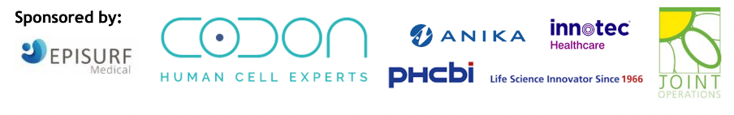

On the 7th and 8th of June 2022 the 12th Oswestry/Keele Cartilage Symposium was held at Keele Hall, organised by Dr Helen McCarthy, Dr Karina Wright, Prof Martyn Snow, Prof Sally Roberts, and Mr Paul Jermin.
The international symposium gathered surgeons and scientists from the UK, Ireland, Germany, Switzerland, and USA to talk about the latest research and clinical updates in terms of treatments, biomarkers next generation biological repair and rehabilitation. During these two days, speakers focus on “Influencing factors in cartilage repair outcomes”, “Current trends in cartilage repair”, “Next generation biological repair”, “Pain in Osteoarthritis”, and “Biomarkers for monitoring knee diseases and treatments”
Abstracts:
An early career session was also organised to allow PhD student and post-docs to introduce their projects to experts in the field.

Abstracts:
Congratulations to Dr Mahid Ahmed (Newcastle) who won the early career presentation award with “A bioprinted high-throughput human 3D osteochondral model for osteoarthritis research”

Thank you to all the presenters for being with us and for sharing their hard work to the assembly and thank you to the organisers who did an amazing job hosting the event and providing an opportunity for us to discuss our data with international experts from around the world.
